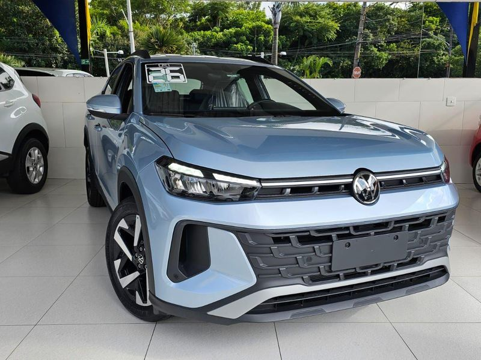
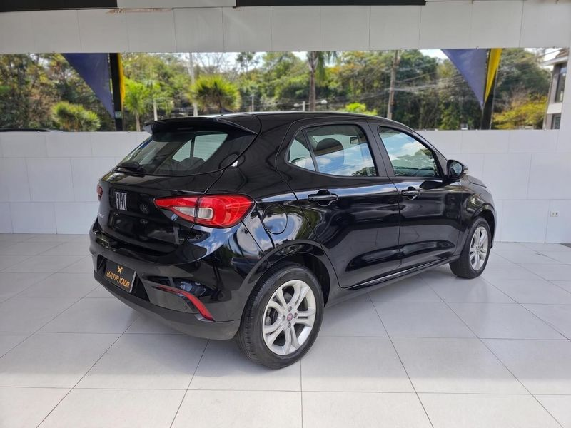
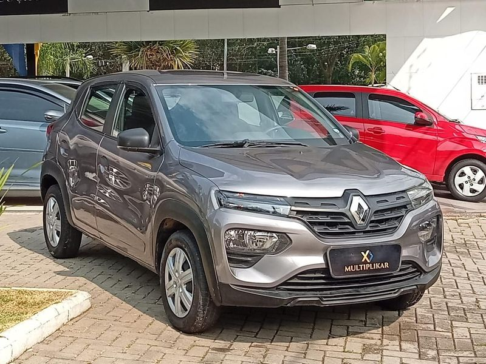

Encontre seu próximo veículo
Componentes e identidade visual do portal Multiplikar Automóveis.
Solicitar proposta

Componentes e identidade visual do portal Multiplikar Automóveis.
Solicitar proposta

